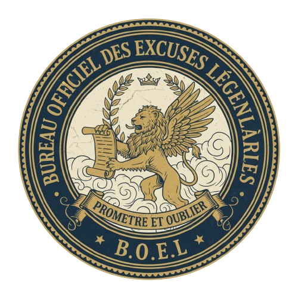

Bienvenue sur le portail numérique régional et administratif du B.O.E.L. Notre mission gouvernementale est d'enregistrer, d'évaluer et de certifier les excuses les plus invraisemblables des étudiants de la section Informatique.